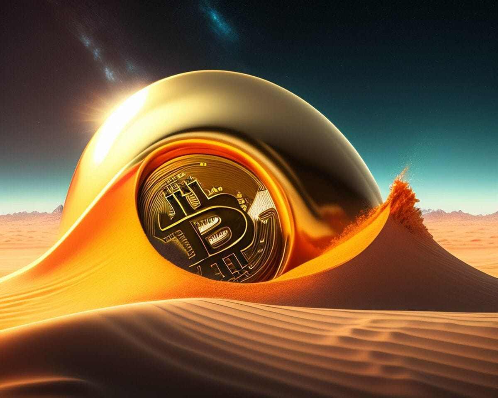

The Rise of Bitcoin Ordinals: Why They Matter
The New Buzz in the Bitcoin World, Ordinals and NFTs 🔮 Bitcoin has been a popular cryptocurrency for years. Its volatility is notorious, yet it has pioneered blockchain technology. Bitcoin is the largest, secure, and decentralized cryptocurrency network. Although other cryptos, like Ethereum, are emerging, Bitcoin reigns supreme. Recent slow development in the Bitcoin community has been shaken up by the introduction of the Ordinals protocol. And this is why Bitcoin ordinals and Non-Fungible T
The New Buzz in the Bitcoin World, Ordinals and NFTs 🔮
Bitcoin has been a popular cryptocurrency for years. Its volatility is notorious, yet it has pioneered blockchain technology. Bitcoin is the largest, secure, and decentralized cryptocurrency network. Although other cryptos, like Ethereum, are emerging, Bitcoin reigns supreme.
Recent slow development in the Bitcoin community has been shaken up by the introduction of the Ordinals protocol. And this is why Bitcoin ordinals and Non-Fungible Tokens (NFTs) have recently caught the eye of crypto enthusiasts. We'll examine what Bitcoin ordinals and NFTs are, why they're significant, why people are abuzz, and how this affects cryptocurrency's future.
What are Bitcoin Ordinals and NFTs?
Every Bitcoin consists of 100 million Satoshis, or SATs, which are indivisible. The Ordinals protocol allows SATs to be sent individually with optional data attached, such as text, images, videos, and more. This attaching of data to SATs is known as inscription and are a new numbering scheme for satoshis, the smallest unit of Bitcoin. Ordinals can be minted by those running Bitcoin nodes, and the name comes from the way in which the protocol assigns numbers to every set based on the order in which they are mined. There are currently over 100,000 inscriptions, including ordinal punks and ordinal penguins, with more to come.
So, What’s The Big Deal?

the master key: an intangible moment of creation onchain
They allow for the tracking and transfer of individual satoshis, with each number representing a unique satoshi. Bitcoin NFTs are inscribed onto satoshis, joining them to the Bitcoin blockchain. Unlike Ethereum-based NFTs that need third-party cloud storage, Bitcoin NFTs are totally on-chain, making them more secure, decentralized, and valuable.
The addition of data to SATs has unlocked new possibilities for Bitcoin. This feature enables users to create one-of-a-kind inscriptions, attracting much interest in the crypto space. People are excited to see the creative ideas that will be inscribed on SATs. This new feature has been made possible by the last major upgrade to Bitcoin, Taproot, which took place in late 2021.
Why Bitcoin Ordinals and NFTs Matter
The rise of Bitcoin ordinals and NFTs is a significant development in the world of cryptocurrency for several reasons. Firstly, it reinforces Bitcoin"s position as the most secure and decentralized blockchain network. Bitcoin NFTs provide heightened security and value compared to other NFTs because they are recorded on the blockchain, making them impervious to hacks, threats and external system glitches. Ethereum-based NFTs, in contrast, depend on cloud servers.
Bitcoin and NFTs enable the trading of digital art, music, videos and other forms of creative content. By inscribing these digital artifacts onto satoshis, Bitcoin NFTs provide a new level of authenticity, rarity, and ownership to digital creators and collectors. With Bitcoin NFTs, creators can monetize their work directly without relying on centralized platforms or intermediaries, while collectors can own unique and valuable pieces of digital art.
Thirdly, Bitcoin ordinals and NFTs open up new possibilities for decentralized finance (DeFi) and other blockchain-based applications. Bitcoin ordinals enable tracking and transfer of individual stats which can be used for e.g. voting, governance, and identity verification through the inception of a new satoshi numbering scheme. Additionally, Bitcoin Non-Fungible Tokens (NFTs) allow secure, decentralized representation of assets such as stocks, bonds, and real estate.
The emergence of Bitcoin NFTs and ordinals heralds a new dawn in cryptocurrency and blockchain development. As users become increasingly aware of the benefits of Bitcoin NFTs and ordinals, novel uses, applications, and innovations are sure to boost Bitcoin's value and utility, and those of other cryptocurrencies.
The introduction of the Ordinals protocol has caused a significant impact on the Bitcoin community. The blockchain has been invigorated by the ability to personalize SATs, allowing users to attach unique and meaningful messages. This feature offers artists and creators a platform to show off their work, demonstrating Bitcoin's potential as a hub for creativity and innovation.
Flip-Side of the Ordinal — A Counter-Argument

Critics argue Bitcoin and other cryptos are only a passing trend, not real store of value, exchange, or inflation hedge. Instead, they believe the real value lies in their ability to serve as a platform for digital art and creative content.
They are also quick to point out that Bitcoin's high energy consumption makes it unsustainable and damaging to the environment. They believe that the surge in Bitcoin orders and NFTs will only drive up energy consumption from Bitcoin mining, which is just silly and a lot of poppycock.
Bitcoin mining and transactions have drawn criticism for their energy consumption, and the Bitcoin community is responding. To reduce the energy consumption and environmental impact of Bitcoin mining, the community is using renewable energy sources and developing new, more efficient hardware. In addition, initiatives such as the Lightning Network reduce the need for on-chain transactions, further improving energy efficiency.
Bitcoin ordinals and NFTs are more than just a passing trend; they offer tangible benefits to digital creators and collectors. With Bitcoin ordinals and NFTs, creators can monetize their work directly and own their digital assets in a way that was previously impossible. Similarly, collectors can own unique and valuable pieces of digital art or other creative content, which can appreciate in value over time.
What Do Ordinals Mean for Bitcoin’s Future?
Ordinals have been compared to NFTs on Ethereum, but with some fundamental differences. While NFTs are created using smart contracts and the assets they represent are often hosted elsewhere, ordinals are inscribed directly onto individual SATs, which are then included in blocks on the Bitcoin blockchain. This makes ordinals "fully on-chain" and does not require a sidechain or separate token. Inscriptions offer the same simple, secure, and permanent qualities that Bitcoin does. There's no limit to the creative uses for ordinals, making it an exciting area to explore.
Questions about the long-term sustainability of ordinals exist. Their impact on the blockchain's size and speed, as well as potential for misuse, are causes for concern. Despite this, ordinals have energized the Bitcoin community and it'll be fascinating to witness their evolution.
The emergence of Bitcoin ordinals and NFTs has been met with valid criticism, yet is a profound development in cryptotech. They afford new and secure means of creating and trading digital assets, promoting decentralization and technological advancement. As the growing popularity of Bitcoin and other digital currencies continues, expect to see further developments to bolster their value and usefulness.